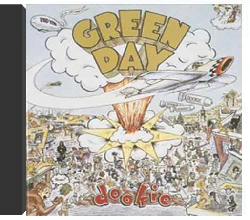

la revancha del tangogotan project la revancha del tangogotan project  Si on se laisse prendre au jeu des percussions, on est assez éloigné du titre du projet. Mais si on avance un peu plus, pour laisser entrer le bandonéon, on est cuit : le tango a pris une drôle de revanche. Avec des plages comme "La Del Ruso" ou l'adaptation de "Chunga's Revenge (signé Frank Zappa), la musique de Gotan Project prend des ailes. Des allures d'oiseau merveilleux, planant par-dessus les frontières de genre, avec un cœur qui bat au rythme de la milonga argentine. Piano, violon, guitare viennent rejoindre le festin, une célébration joyeuse de la rencontre de l'électronique et du tango. Au cœur du dispositif, un génie multi-instrumentiste nommé Philippe Cohen Solal, un drôle de clavier dubbeur insatiable, et bassiste puissant, et le délicat guitariste Eduardo Makaroff. Le trio, en invitant quelques figures du tango argentin (Nini Flores au bandonéon, la chanteuse Cristina Vilallonga...) vont produire cette aventure exaltante, où la musique va aussi servir d'écho à quelques cris de guerre et de révolte. "Queremos Paz" ou "El Capitalismo Foráneo", avec leur groove obsédant de tango du 3e millénaire, prennent soudain une douloureuse résonance, dans l'Argentine ruinée de l'année 2001. —José Ruiz dookiegreen day En 1994, une bande de morveux californiens sortent leur troisième album, Dookie, et se trouvent pris entre deux feux. D'un côté les adolescents, qui les adorent. De l'autre, ceux qui ont connu la première vague punk et accusent Green Day de n'être que de mauvais copieurs. A tort, car le trio a de l'énergie brouillonne et de l'attitude à revendre, cultive l'humour potache d'un goût douteux, via ses vidéos, et connaît les trois même accords de guitare que les Ramones. Et surtout, ils savent écrire de petits brûlots teigneux, qui procurent un plaisir immédiat, malgré des paroles grinçantes ou carrément noires. "Basket Case" est un festival de batterie cognant dur et de guitares simplistes autant que réjouissantes. "Longview" alterne le semi-calme et la cacophonie, formule usée, mais qui produit ici son petit effet. "When I Come Around", ses riffs et son tempo plus élaborés, clouera le bec aux détracteurs. Punk ou pas, qui s'en soucie ? Green Day demeure un grand groupe de pop garage. —Isabelle Chelley appetite for destructionguns n' roses Si l'on met de côté l'influence gigantesque et les dizaines de millions de ventes qu'il a entraînées, Appetite For Destruction nous apparaît comme une véritable prédiction. Les revendications d'un fils à papa de "Out Ta Get Me" semblent présager de l'égocentrisme démesuré et du sens de la persécution du chanteur Axl Rose. Ce mélange détonnant de punk et de metal (à la fois dans le son et dans la sensibilité) allait faire de cet album le symbole d'une époque. Qu'ils la jouent dance avec Mr Brownstone, qu'ils écrivent une lettre d'adieu à une fille nommée Michelle ou qu'ils comatent dans un sofa, les Gunners ne font rien d'autre que de nous entraîner dans un périple sauvage au coeur du rêve américain voire hollywoodien. —Rickey Wright  use your illusion 1guns n' roses use your illusion 1guns n' roses Le premier volume de cet ambitieux deuxième album est peut-être le meilleur des deux. En tout cas, même si cela nous semble parfois être le pur fruit du hasard, il déménage beaucoup plus que le deuxième. Guns'N Roses ont probablement tiré à la courte paille pour savoir quel morceau allait figurer sur quel disque. Use Your Illusion I semble rester plus fidèle aux racines blues hard-rock du groupe. Le guitariste Izzy Stradlin apporte son aide sur certains des meilleurs morceaux ("Dust N' Bones", "You Ain't The First"). "November Rain" malgré sa durée (plus de 9 minutes), devient un classique instantanément et "Perfect Crime," "Don't Damn Me," et "Garden Of Eden" restent des titres solides. Un album simple aurait suffit et il aurait quand même été un très bon album. —Genevieve Williams |


 Made with Delicious Library
Made with Delicious LibraryNancy, State zipflap congrotus delicious library Thomas, Julien